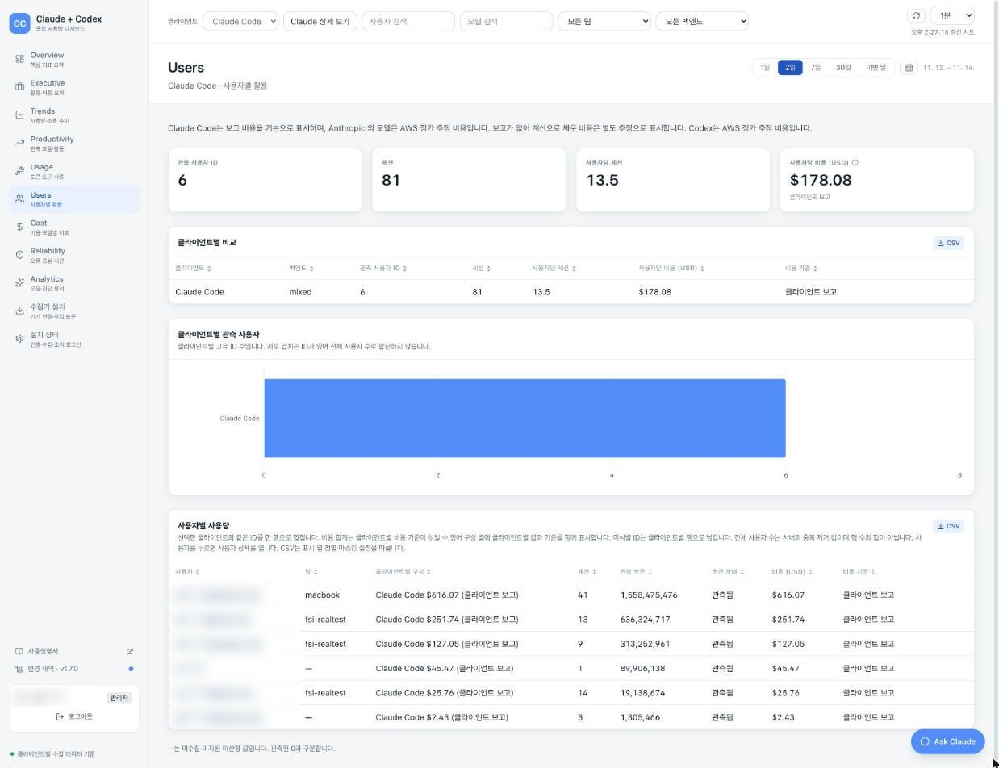
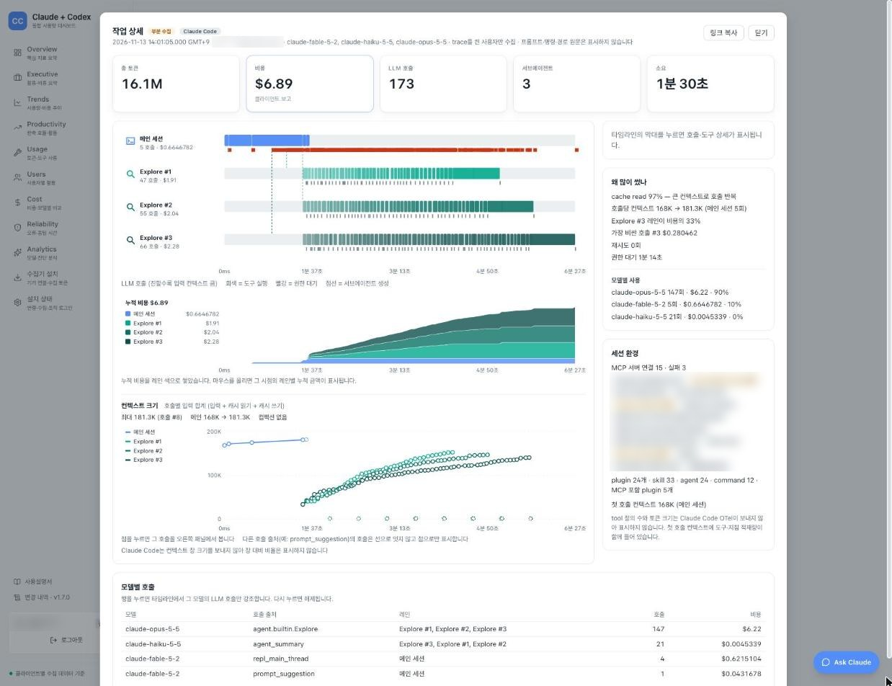

Chapter 1. Claude Code는 어떻게 동작하는가
에이전트 루프부터 이틀 동안 배울 내용까지 (v2.1.319, 2026-11-08 리허설 검증)
Choi, WooHyung
Prin. Solutions Architect
AWS Korea
10명 중 4명, 이제 막 출발선
사전 설문 결과로 정한 이 챕터의 눈높이
참가 확정자 142명 중 60명이 Claude Code 활용 수준을 입문, 초급으로 답했습니다.
그래서 이 챕터에서 전체 구조를 먼저 맞추고, 랩 명령은 그대로 복사해 따라 할 수 있게 만들었습니다.
막대 길이는 응답 인원, 주황 막대가 입문과 초급(합계 60명)
네 개의 Part와 통합 랩
네 개의 Part와 Lab, 작동 원리에서 이틀간의 학습 지도까지
모델 + 도구 = 에이전트
모델은 생각하고, Claude Code는 그 생각을 파일과 터미널에 연결
도구, 권한, 컨텍스트를 다루는 이 실행 틀이 하네스(harness)입니다. Claude Code가 바로 하네스입니다.
출처: code.claude.com/docs/ko/how-claude-code-works
루프 하나, 기능 여덟 가지
클릭하면 역할과 다루는 챕터를 보여 주는 Claude Code 전체 구조
여덟 칸 중 하나를 누르거나 아래 화살표를 누르면, 그 영역이 하는 일과 다루는 챕터가 여기에 나옵니다.
입력과 세션
CLI, IDE, CI 어디서든 같은 루프가 돕니다. 세션은 이어 갈 수 있고, 권한 모드가 확인 방식을 정합니다.
Ch1오늘 Part 2와 Part 3
컨텍스트
CLAUDE.md, 자동 메모리, 스킬, 대화 압축. 모델에 매번 함께 보내는 내용이라 곧 비용입니다.
Ch1Ch5무엇이 실리는지, 어떻게 줄이는지
조직 정책
managed settings와 권한 규칙, 모델 고정, 지출 한도. 사용자가 바꿀 수 없는 설정으로 배포합니다.
Ch2배포 경로와 가드레일
역할별 에이전트
Subagent는 각자 따로 쓰는 컨텍스트와 도구 권한을 가지고, 병렬로 실행할 수 있습니다.
Ch3역할 정의와 디스패치
도구 실행
파일, 검색, Bash, WebFetch. 반복해서 보내는 앞부분은 프롬프트 캐시로 비용을 줄입니다.
Ch1Ch5도구 종류와 캐시
검사와 기록
도구 실행 전후에 끼어드는 검사(DLP), 그리고 OTel과 세션 로그로 남기는 기록입니다.
Ch2Ch6막는 훅과 보는 계측
플러그인, MCP, mod
팀 도구를 묶어 배포하고(플러그인), 외부 시스템을 연결하고(MCP), 화면과 동작을 바꿉니다(mod).
Ch4팀의 플랫폼으로 확장
결과
바뀐 코드와 확인한 출력, 그리고 남는 기록(세션 JSONL, CloudTrail)입니다.
Ch1Ch2무엇이 어디에 남는가
한 번의 요청이 처리되는 방식
- 01세 단계 루프
- 02도구 다섯 종류
- 03퀵 체크: Bedrock에 없는 도구
수집, 수행, 검증을 필요한 만큼
에이전트 루프 세 단계와 사용자 개입
기본 도구 다섯 종류
주목할 내장 도구 2개와 도구를 더하는 방법 2개
왼쪽 도구를 누르면 무엇을 하는지, 무엇을 조심해야 하는지 보여 줍니다.
파일 작업
Read, Write, Edit 같은 도구로 파일을 읽고 고칩니다. Claude가 한 파일 편집은 체크포인트로 되돌릴 수 있습니다.
Part 2체크포인트가 되돌리는 범위
검색
Glob으로 파일 이름 패턴을, Grep으로 내용을 찾습니다. 수집 단계에서 가장 많이 쓰이는 도구입니다.
읽기 전용파일을 바꾸지 않음
실행: Bash
가장 강력하고 가장 위험한 도구입니다. 테스트와 빌드는 물론, 배포나 git push처럼 되돌릴 수 없는 일도 할 수 있습니다.
통제 대상권한 규칙과 훅으로 미리 막음 (Ch2)
웹: WebFetch와 WebSearch
WebFetch는 Bedrock에서 URL을 읽는 내장 도구입니다. WebSearch는 Anthropic 내장 웹 검색이라 Bedrock 경로에는 없습니다.
Bedrock검색이 필요하면 WebFetch에 URL 지정, 또는 MCP
코드 인텔리전스
타입 오류를 보거나 정의로 이동하는 기능은 플러그인으로 더합니다.
Ch4도구를 더하는 MCP, 도구를 묶어 배포하는 플러그인
Bedrock에서 못 쓰는 도구는?
QUICK CHECK, 손을 들어 답해 주세요
Amazon Bedrock 경로에서 Claude가 쓸 수 없는 도구는?
정답 C. Bedrock에서는 WebFetch에 특정 URL을 지정해 웹을 읽습니다. (feature-availability 문서)
무엇이 들어가고 어디에 남는가
- 01컨텍스트에 실리는 것
- 02세션은 로컬 파일
- 03체크포인트의 한계
컨텍스트에 실리는 다섯 가지
항상 실리는 것과 필요할 때 오는 것, 그리고 줄이는 방법
항목을 누르면 왼쪽 창에서 자리를 표시하고, 줄이는 방법을 보여 줍니다.
Claude Code의 기본 지침과 도구 정의(내장 도구 + MCP 서버 스키마). 기본 지침은 사용자가 줄일 수 없고, 줄이는 법은 쓰지 않는 MCP 서버 끄기입니다.
프로젝트, 사용자 지침으로 매 요청에 실립니다. 줄이는 법: 200줄 이하, 절차는 스킬로.
MEMORY.md의 첫 200줄 또는 25KB를 세션 시작에 싣습니다.
이름과 설명만 항상 실리고, 본문과 정의는 필요할 때 불러옵니다. 줄이는 법: 설명을 짧고 구체적으로.
가장 빨리 커지는 부분이자 자동 압축 대상입니다. 줄이는 법: 큰 출력은 훅으로 거르기, /clear.
세션 = 내 PC의 평문 파일
세션 파일, 세션 명령, 보존 기간, 체크포인트의 범위
CLAUDE.md는 매 요청마다 실립니다. 작업별 지침은 스킬로 옮겨 필요할 때만 불러옵니다.
출처: code.claude.com/docs/en/costs, Move instructions from CLAUDE.md to skills
Bedrock 위에서 데이터가 가는 길
- 01권한 모드
- 02데이터 경로
- 03Bedrock에서 되는 것과 안 되는 것
Shift+Tab 한 번, 확인 방식 전환
권한 모드 여섯 가지와 금융권 권고
> 결제 모듈 테스트를 고쳐 줘
순환 순서: auto, default(화면 표기 manual), acceptEdits, plan. 터미널 문구는 설명용 예시
아래 두 모드는 Shift+Tab 순환에 없고, 설정이나 실행 옵션으로 정합니다.
실행은 PC, 추론은 내 계정의 Bedrock
Bedrock 경로의 데이터 흐름과 그 밖의 통신
로컬 기능은 전부 가능
Bedrock에서 되는 것, 안 되는 것, 조건부인 것
CLI에서 로컬로 도는 기능은 모델 경로와 상관없이 동작합니다.
정책 콘솔과 Analytics는 파일 정책(Ch2)과 계측(Ch6)으로 채웁니다.
조건에 따라 동작합니다. Auto mode의 경계 설계는 Ch2 Lab 2에서 다룹니다.
SendFeedback(제품 피드백 초안 제출)과 EndConversation(모델이 세션 종료를 결정)도 빠집니다. Bash, Read, Write, Edit, Grep, Glob, WebFetch, Subagent, 스킬, 직접 설정한 MCP 도구는 그대로 씁니다. 실제 사용 여부는 권한과 설정에 따릅니다.
컨텍스트는 Bedrock으로
읽은 코드와 명령 출력도 컨텍스트에 실립니다. 그것이 데이터 통제의 출발점입니다.
관리와 활용, 두 갈래와 공통 기반
PART 04, 같은 기능을 관리자와 사용자 양쪽에서
갈래를 누르면 해당 챕터가 나옵니다.
처음 들어도 괜찮은 여덟 단어
이틀 동안 자주 나오는 말, 챕터마다 다시 설명
단어를 누르면 뜻이 나옵니다.
컨텍스트
모델에 매번 함께 보내는 내용. 많을수록 비용이 커집니다.
CLAUDE.md
프로젝트 규칙을 적어 두는 파일. 매 요청에 실립니다.
managed settings
관리자가 배포하고 사용자가 바꿀 수 없는 설정 파일.
훅(hooks)
도구 실행 전후에 끼어드는 검사 스크립트.
auto mode
분류기가 위험한 동작만 막고 나머지는 묻지 않는 모드.
Subagent
역할과 도구 권한을 따로 가진 보조 에이전트.
플러그인, MCP
플러그인은 팀 도구를 묶어 배포하는 단위, MCP는 외부 시스템을 도구로 붙이는 표준.
mod
Claude Code 화면과 동작을 바꾸는 작은 코드.
Day 1은 조직으로, Day 2는 측정으로
이틀간의 흐름, 개인에서 조직으로 그리고 확장에서 측정으로
세부 시간은 초대 메일(eDM)을 확인해 주세요. Capstone 라운드는 매일 한 번 이어집니다.
통합 랩에서 직접 확인할 다섯 가지
LAB, Preflight + 에이전트 루프 관찰 (점심 뒤 통합 랩)
- PREFLIGHTWorkshop Studio 접속, IDEUrl로 code-server 열기, 게이트웨이 응답 확인
- TASK 01/status로 Bedrock과 us-east-1 확인, 수집, 수행, 검증 지켜보기Part 1
- TASK 02/context, CLAUDE.md, 세션 JSONL 파일 확인Part 2
- TASK 03/rewind로 되돌리기, Shift+Tab으로 plan 모드Part 2, 3
- TASK 04CloudTrail에서 Bedrock 호출 기록 확인Part 3
Hands-on Lab 포털에서 Preflight, 그다음 Chapter 1 순서로 엽니다. 명령은 그대로 복사해 따라 하시면 됩니다.
누가 쓰고 누가 고칠 수 있나
더 알아보기, CLAUDE.md 네 계층과 OS별 위치
모델 ID 접두사 = 처리 위치
더 알아보기, 추론 리전과 데이터 위치
왼쪽에서 접두사를 고르면 추론이 일어날 수 있는 범위가 켜집니다. 점은 리전을 나타낸 설명용 그림입니다.
추론 프로필: 모델 ID 접두사가 데이터가 처리되는 곳을 정합니다.
모델 고정: ANTHROPIC_DEFAULT_*_MODEL (Ch2)
global 프로필의 추론은 어디서?
QUICK CHECK, 손을 들어 답해 주세요
global.anthropic.claude-sonnet-5-5로 호출하면 추론은 어디서 일어날까요?
정답 B. 데이터 위치 요건이 있으면 지역 프로필이나 단일 리전 ID를 씁니다.
이후 챕터의 출발점 여섯 가지
Chapter 1 Key Takeaways
Thank You
다음은 Chapter 2. Bedrock 위에서 안전하게 쓰기입니다. 질문은 Slack #20261116-claude-code-workshop-for-fsi 채널에서 언제든 받습니다.
Chapter 2. Bedrock 위에서 안전하게 쓰기
키는 나눠 주지 않고, 정책은 파일로, 막을 것은 앞에서 (Claude Code v2.1.319, Bedrock 기준)
Oh, Junseok
Sr. Solutions Architect
AWS Korea
열에 여섯이 고른 주제, 안전하게 쓰기
사전 설문 결과로 정한 이 챕터의 목표
참가 확정자 142명 중 87명이 망분리와 보안, 규제와 감사 대응, Admin Setup 가운데 하나 이상을 기대 주제로 골랐습니다. 모두 이 챕터가 답하는 주제입니다.
그런데 지금 Bedrock으로 쓰는 분은 17명입니다. 그래서 Bedrock에 닿는 길부터 그림으로 보고, 정책 배포와 가드레일로 넘어갑니다.
기대 주제는 복수 선택, 막대 길이는 응답 인원
핵심은 강의, 깊이는 실습
세 개의 Part, 연결에서 정책과 가드레일까지
금융권이 Bedrock을 고르는 이유
대신 claude.ai의 관리 콘솔, Analytics, 정책 서버가 없음
claude.ai의 관리 콘솔, Analytics, 정책 서버가 없는 자리를 무엇으로 채우는지, 그것이 이 챕터와 Ch6의 이야기입니다.
사내망에서 Bedrock까지, 인터넷 없이
요청 하나가 지나가는 길 (사내망과 전용선 기준)
망분리 환경의 여덟 가지 점검
인터넷 없이 Bedrock만 열려 있을 때 먼저 확인할 것
첫 세션까지 가장 짧은 길
- 01환경변수와 IAM 권한
- 02키 대신 SSO 로그인
- 03모델 고정과 팀 이름표
환경변수 두 개로 연결
변수마다 바뀌는 것 하나: 목적지, 리전, 경유지
IAM 권한은 호출, 조회, Marketplace
Claude Code가 부르는 API마다 필요한 권한
복사되는 키, 만료되는 SSO
키는 나눠 주지 않고, 로그인해서 짧게 빌려 쓰기
다섯 가지 중 권장은 하나
Bedrock API 키만 AWS SDK 기본 체인을 거치지 않음
만료 시 자동 재로그인
SSO 자동 갱신, awsAuthRefresh와 awsCredentialExport
고정하지 않으면 무엇이 도는가?
QUICK CHECK, 손을 들어 답해 주세요
모델을 고정하지 않은 Bedrock 배포에서 기본 주 모델은?
정답 B. 고정하지 않으면 Opus 단가로 청구됩니다. (amazon-bedrock 문서)
여러 사용자에게 배포하면 반드시 고정
별칭이 어느 모델 ID로 가는지 정하기
팀마다 다른 이름표, 추론 프로필
누구의 호출이 어느 프로필을 지났는지 남기기
콘솔이 없으니 파일이 정책이다
- 01파일 한 장이 모든 PC로
- 02키 충돌과 잠금 스위치
- 03배포 후 확인
콘솔 대신 파일과 MDM
정책 파일 한 장이 모든 개발자 PC로 가는 길
키 충돌 시 상위 우선
같은 키가 다섯 층에 있을 때 이기는 값
조직이 거는 잠금 스위치 여섯 개
managed-settings.json에 넣는 잠금 키와 그 효과
Lab에서 배포할 정책 한 장
managed-settings.json, 줄마다 담은 뜻
JSON이 깨지면 어떻게 될까?
QUICK CHECK, 손을 들어 답해 주세요
managed-settings.json에 JSON 문법 오류가 있으면?
정답 C. "Managed settings document could not be parsed" 오류를 내고 시작하지 않습니다(claude -p는 exit=1). JSON은 맞고 항목 하나만 틀렸다면 그 항목만 빠지고 나머지는 적용됩니다.
배포 이후가 진짜 시작
적용 검증 4단계, 랩 순서 그대로
앞에서 막고, 놓친 것은 뒤에서, 남는 것은 기록으로
- 01권한 규칙과 분류기, 두 개의 문
- 02층마다 잡는 것, 프롬프트 앞의 DLP 훅
- 03정책으로 강제, 남는 기록
deny 절대 우선
권한 평가 순서와 Tool(specifier) 규칙 문법
user allow, managed deny라면?
QUICK CHECK, 손을 들어 답해 주세요
user settings에 allow "Bash(curl *)", managed에 deny "Bash(curl *)". 결과는?
정답 C. 권한 규칙은 합쳐지고, deny가 먼저 평가됩니다.
권한 규칙이 첫 문, 분류기가 둘째 문
auto mode의 판정 순서
설정하지 않아도 막는 네 가지
분류기의 기본 규칙이 막는 것과 통과시키는 것
앞 층이 놓친 것은 다음 층에서
위험한 명령 하나가 지나가는 검사 순서
DLP는 프롬프트 앞에서
UserPromptSubmit 훅이 모델보다 먼저 본다
차단은 exit 2뿐
DLP 훅 예제와 fail-open, 그리고 수정본
jq 없이 exit 127이면?
QUICK CHECK, 손을 들어 답해 주세요
DLP 훅이 jq 미설치로 exit 127로 끝나면 어떻게 될까요?
exit 0진행exit 2차단exit 127?비차단 오류, 진행정답 B. exit 2만 차단입니다. 그 외 0이 아닌 종료는 비차단 오류로 처리되어 그대로 진행됩니다. onFailure: "block"을 걸면 이 경우도 차단됩니다.
정책으로 강제하는 훅
사용자가 끄지 못하게, 고장 나도 막히게
MCP 서버 하나가 통로 하나
새 반출 채널을 정책으로 닫는다
감사 근거가 남는 네 곳
요청 하나가 어디에 무엇을 남기는가
더 깊은 내용은 실습에서 손으로
강의에서 줄인 주제와 실습 TASK
- Lab 1 TASK 01지금의 연결 읽기: env, 추론 프로필, 최소 IAM 정책과 비교IAM 세부
- Lab 1 TASK 02부터 04정책 배포, 개인 설정으로 우회 시도, 정책 파일이 깨지면?정책 배포
- Lab 1 TASK 06같은 정책을 게이트웨이 그룹 정책으로 내려보내기게이트웨이
- Lab 2 TASK 01, 02DLP 훅을 정책으로 강제하고, fail-open을 고치기훅
- Lab 2 TASK 03auto mode로 확인 창을 줄이고 경계 긋기auto mode
- Lab 2 선택 TASK샌드박스로 curl 빈틈 막기, Bedrock Guardrails, 확장 통제DLP 층
망분리 준비물, OS별 차이, 쿼터는 PDF 강의자료(정책편, 가드레일편)의 더 알아보기에 있습니다.
기억할 여섯 줄
Chapter 2 Key Takeaways
비용을 줄이는 법은 Ch5(개인), 조직이 비용을 보고 통제하는 법은 Ch6에서 이어집니다.
Thank You
다음은 점심입니다. 식사 후 통합 랩에서 Preflight와 Ch1 Lab을 마친 뒤, 오늘 본 정책과 훅을 Ch2 Lab 1, Lab 2에서 직접 배포하고 뚫어 봅니다. 질문은 Slack #20261116-claude-code-workshop-for-fsi 채널에서 언제든 받습니다.
Chapter 3. Subagent로 일 나눠 맡기기
역할별 에이전트로 나누고, 병렬로 맡기기 (Claude Code v2.1.319, 2026-11-08 리허설 검증, Bedrock 기준)
Song, Minji
Solutions Architect
AWS Korea
가장 듣고 싶은 주제 1위
사전 설문 기대 주제, 그래서 강의 뒤 랩까지
기대 주제 1위는 Subagent였습니다.
가장 많이 듣고 싶어 한 주제라 강의 뒤에 직접 만드는 랩을 이어 붙였습니다.
랩은 필수 TASK 00부터 04, 선택 05, 남는 시간은 질문
네 개의 Part와 랩
네 개의 Part와 Lab, 동작 원리부터 병렬의 확장까지
본 흐름을 잃지 않고 곁가지를 맡기는 공간
- 01네 가지 속성
- 02분기와 컨텍스트 이동
- 03정의 파일 한 장
- 04정의 파일이 사는 곳
곁가지는 위임, 결과는 요약으로
Subagent의 네 가지 속성과 그 효과
분기와 합류, 컨텍스트의 이동
Subagent, Fork, 세션 분기를 git branch처럼 한 장에
메인 대화에서 세 가지 방식으로 갈라집니다. 아래 화살표로 하나씩 봅니다.
| 들고 가는 것 | 돌려받는 것 | |
|---|---|---|
| Subagent | 위임 메시지, 전용 프롬프트, CLAUDE.md (대화 기록은 없음) | 요약만 |
| Fork | 대화 전체, 프롬프트 캐시 | 결과만 |
| 세션 분기 | 그 시점까지의 대화 사본 | 없음, 각자 진행 |
frontmatter 몇 줄 = 역할 하나
정의 파일 한 장, 필드를 누르면 해당 줄이 켜짐
---name: spending-analystdescription: | 고객 또는 고객 그룹의 소비 패턴과 생애 단계를 추정하는 소비 분석가. 월별 카드 소비 요약, 계좌 잔액, 고객 기본 정보를 근거로 삼음. 사용 시점: 소비 성향, 선호 카테고리, 연령대별 생애 단계 분석이 필요한 경우.tools: Read, Grep, Glob, Bash(python3:*)model: sonnet---당신은 소비 데이터를 읽는 고객 분석가입니다.# 분석 순서: 그룹 고르기, python3로 집계, 생애 단계 추정# 출력 형식: 집계만 보고, 개별 고객 ID와 토큰 값은 쓰지 않음
맨 위 --- 사이가 frontmatter이고, 그 아래가 본문입니다. 본문은 줄여서 보여 줍니다.
필드를 누르면 왼쪽 파일에서 해당 줄이 켜집니다.
name은 호출 이름입니다. @ 입력 후 목록에서 고를 때 보이는 이름이라, 역할이 드러나는 짧은 이름이 좋습니다.
description은 Claude가 자동으로 맡길지 판단하는 근거입니다. 예시처럼 소비 패턴과 생애 단계 분석이라는 일과, 언제 쓰는지까지 구체적으로 적습니다.
tools는 쓸 수 있는 도구 목록입니다. Edit, Write가 없으니 파일을 고칠 수 없고, Bash는 python3으로 시작하는 명령만 허용됩니다.
model은 sonnet, opus, haiku, fable, 전체 모델 ID, inherit 중에서 고릅니다. 단순 작업은 haiku가 좋습니다.
frontmatter 아래 본문이 시스템 프롬프트입니다. 사용할 데이터, 분석 순서, 출력 형식을 명시합니다.
저장 위치 = 공유 범위
정의 파일이 사는 네 곳
위치를 누르면 용도와 배포 방법이 나옵니다.
프로젝트 표준 에이전트
저장소에 커밋하면 그 저장소를 받는 팀 전체가 같은 에이전트를 씁니다.
배포저장소에 커밋
개인 도구
내 PC의 모든 프로젝트에서 쓰는 개인 에이전트입니다. 팀과 공유되지 않습니다.
배포개인
팀 킷 배포
플러그인 안의 agents/ 폴더에 두면, 그 플러그인을 설치한 사용자가 씁니다.
Ch4마켓플레이스로 배포
실험과 CI
--agents 플래그로 이번 세션에만 정의합니다. 실험이나 CI용입니다.
주의사이드로드 금지 대상
/agents (v2.1.198+)는 안내 문구만 출력합니다. 확인은 @ 입력, 생성과 수정은 파일 편집이나 Claude에게 요청합니다.
읽기 전용 에이전트가 고치려 하면?
QUICK CHECK, 손을 들어 답해 주세요
tools에 Write가 없는 risk-reviewer에게 점검 결과를 파일로 저장하라고 하면?
정답 C. 허용 목록에 없는 도구는 그 Subagent에 존재하지 않습니다.
어떻게 맡기고, 얼마나 드는가
- 01위임 세 방식
- 02Subagent와 비용
- 03레거시 분석과 claude -p
위임 방식 = 통제 수준
위임 세 방식과 foreground, background
컨텍스트는 절약, 요청은 별도
Subagent와 비용, 모델 상속 시뮬레이터
아끼는 것
드는 것
레거시, 바꾸기 전에 나눠 읽기
레거시 현대화를 고른 40명이 가장 먼저 해 볼 방법
카드를 누르면 무엇을 하는지 나옵니다. 왼쪽부터 순서대로 진행하면 됩니다.
plan 모드로 계획 먼저
계획을 먼저 받고, 승인 전까지 편집은 보류됩니다. 읽기 전용이 필요하면 tools로 제한합니다.
Explore로 넓게 훑기
읽기 전용 내장 에이전트 Explore가 넓게 찾고, 결과는 요약만 메인으로 돌아옵니다.
모듈별로 나눠 분석
모듈마다 Subagent 하나를 맡기고, 요약을 모아 한 문서로 만듭니다.
규칙은 CLAUDE.md에
이름 규칙, 금지 패턴, 빌드 방법을 CLAUDE.md에 적어 두면 다음 세션도 같은 기준으로 봅니다.
대화 없는 에이전트 실행
claude -p, CLI 파이프라인을 고른 42명을 위한 가장 짧은 예
Subagent 다음 단계
- 01더 큰 병렬화 수단
- 02Bedrock에서 달라지는 점
더 크게 나누는 세 가지 수단
세 수단 모두 Bedrock에서 동작
Bedrock에서 미리 챙길 네 가지
비용 예상과 사전 확인에 반영할 네 가지
자주 받는 질문과 세부 설정
- 01정의 파일 필드
- 02내장 Subagent
- 03Subagent vs 스킬
- 04CI에서 Subagent
- 05병렬의 비용
필수는 name과 description 둘뿐
정의 파일 필드와 작성 요령
정의 없이도 이미 사용 중
대표 내장 Subagent 세 가지
Bedrock에서는 Explore가 메인 모델을 그대로 씁니다 (Part 3). Explore, Plan은 일회성이라 이어서 시킬 수 없습니다. 이어 갈 일은 커스텀 에이전트로.
나눌 것은 Subagent, 공유할 것은 스킬
무엇을 나누고 무엇을 공유하나
SUBAGENT별도 컨텍스트
스킬메인 컨텍스트에 불러옴
메인이 나은 일: 잦은 주고받기, 작은 수정 / Subagent가 꼭 필요한 일: 권한 강제
CI에서는 키 없이 OIDC로
GitHub Actions에서 Subagent로 야간 세그먼트 리포트
시간은 단축, 토큰은 합산
병렬의 비용, 순차와 병렬 비교
작업 시간은 설명용 예시입니다.
tools를 빼면 무엇을 쓸까?
QUICK CHECK, 손을 들어 답해 주세요
tools를 지정하지 않은 Subagent는?
정답 B. MCP 도구까지 상속되므로 최소 권한은 tools로 명시합니다.
맡기는 기술 여섯 가지
Chapter 3 Key Takeaways
오늘 만든 에이전트를 Ch4에서 팀 플러그인으로 묶습니다.
랩, 세 에이전트 완성
LAB, 필수 TASK 00부터 04와 선택 05, 첫 Subagent와 권한 격리
- TASK 00사전 준비 확인, 앞 챕터 정책 초기화와 작업 폴더 준비
- TASK 01첫 Subagent, spending-analyst 만들기강의 Part 1 연계
- TASK 02도구 권한 격리 체험, 읽기 전용 risk-reviewer강의 Part 1 연계
- TASK 03에이전트 3종 완성, portfolio-analyst 추가
- TASK 04Task 디스패치 3패턴 (자동, 명시, 병렬), segments.md 완성강의 Part 2 연계
- 선택 05claude -p로 대화 없이 실행, segments.json강의 Part 2 연계
Hands-on Lab 포털에서 Chapter 3을 열고 TASK 00 사전 준비부터 진행합니다. 가명 데이터 pseudo/만 읽고, TASK 02부터는 두 번째 터미널을 함께 씁니다. 여기서 만든 에이전트 3종과 segments.md를 Ch4에서 씁니다.
Thank You
다음은 Capstone Round 1입니다. 질문은 Slack #20261116-claude-code-workshop-for-fsi 채널에서 언제든 편하게 남겨 주세요.
Chapter 4. Claude Code 확장하기
나의 Claude Code를 팀의 플랫폼으로 (2026.11, Claude Code v2.1.319, Bedrock 기준)
Huh, Jinsung
Sr. Solutions Architect
AWS Korea
기대 주제 2위, 팀 표준화
사전 설문 결과로 정한 이 챕터의 목표
참가 확정자 142명 중 60명이 팀 표준화(설정, 권한, 훅, MCP)를 기대 주제로 골랐습니다.
이 챕터에서 그 표준을 플러그인 하나로 묶어 배포합니다.
기대 주제 2위, 복수 선택 문항
강의 세 Part와 Super Lab
개인 설정에서 팀의 플랫폼까지
Plugins & Mods로 스킬, Subagent, 훅, MCP, mod를 한 번에 배포합니다.
팀의 작업 방식을 묶어 배포하는 단위
- 01여섯 가지 확장 방법
- 02플러그인 구조
- 03설치와 갱신
여섯 가지 중 다섯을 한 폴더에
무엇을 넣을지는 언제, 누가, 무엇을 바꾸는가로 선택
CLAUDE.md는 managed CLAUDE.md나 저장소로,
나머지 5종은 한 디렉터리에 담아 플러그인으로 배포합니다.
하나를 누르면 언제 쓰는지 나옵니다.
CLAUDE.md
항상 알아야 할 짧은 지침을 둘 때 씁니다.
플러그인이 아니라 managed CLAUDE.md나 저장소로 배포합니다. 매 요청에 실리기 때문에 짧게 유지합니다 (Ch1, Ch5).
스킬
같은 지시를 반복할 때 씁니다. 필요할 때만 로드됩니다.
예: 노후 연금 격차 계산 절차 retirement-gap
Subagent
역할과 도구를 나눠 맡길 때 씁니다.
예: Ch3에서 만든 portfolio-analyst
훅
이벤트에 스크립트로 막거나 기록할 때 씁니다.
예: Ch2의 DLP 훅
MCP
외부 시스템에 닿아야 할 때 씁니다.
외부로 나가는 채널이라 반출 채널 검토 대상입니다.
mod
화면, 커맨드, 이벤트 자체를 바꿀 때 씁니다.
Part 3에서 자세히 다룹니다.
폴더 하나 = 팀의 표준
플러그인 디렉터리 구성과 각 파일의 역할
점선 두 줄은 이 예시에는 없지만 플러그인에 넣을 수 있는 파일입니다.
파일을 누르면 무엇이 들어가는지 보여 줍니다. Ch2와 Ch3의 결과물을 그대로 넣고, 설치 한 줄로 동료가 같은 환경을 갖습니다.
.claude-plugin/plugin.json
플러그인의 이름, 버전, 설명. 유일한 필수 파일입니다.
버전으로 변경 이력을 관리합니다.
skills/<name>/SKILL.md
스킬. 설명만 항상 실리고 본문은 필요할 때 로드됩니다.
예시는 노후 연금 격차를 정해진 절차로 계산하는 retirement-gap입니다.
agents/*.md
Subagent. Ch3에서 만든 정의를 그대로 넣습니다. spending-analyst, portfolio-analyst, risk-reviewer 세 개입니다.
Ch3 파일이 없으면 랩 TASK 00에서 키트 기준본으로 채웁니다.
hooks/hooks.json
훅을 등록하는 곳. Ch2의 DLP 훅을 여기에 등록합니다.
mod도 같은 hooks/ 아래에 들어가고, 경로는 ${CLAUDE_PLUGIN_ROOT}를 씁니다.
scripts/dlp-guard.sh
훅이 실행하는 검사 스크립트입니다.
commands/*.md
슬래시 커맨드. 스킬로 대체되는 추세입니다.
.mcp.json
MCP 서버 정의. 외부로 나가는 길이라 반출 채널 검토 대상입니다 (Ch2).
등록, 설치, 적용, 갱신의 네 단계
마켓플레이스에서 동료의 세션까지 플러그인이 가는 길
설치를 강제하고 출처를 제한한다
- 01사내 마켓플레이스 강제
- 02망분리와 CI
- 03배포 후 측정
허용, 등록, 강제, 사이드로드 금지
managed-settings.json 네 개 키로 사내 마켓플레이스를 강제
허용 목록이면 사이드로드도 막힐까?
QUICK CHECK, 손을 들어 답해 주세요
strictKnownMarketplaces 허용 목록만 설정하면 --plugin-dir 로컬 로드는?
정답 B. 사이드로드는 disableSideloadFlags로만 막습니다.
git clone 불가 환경엔 사전 배치
망분리와 CI는 CLAUDE_CODE_PLUGIN_SEED_DIR
설치 다음은 사용 확인
배포 후 측정, OTel 이벤트 두 개와 이름 가림
무엇이 설치되고 쓰이는지 OTel로 봅니다. 카드를 누르면 각 이벤트가 답하는 질문이 나옵니다.
plugin_installed
설치할 때마다 기록됩니다. 누가 설치했는지 답합니다.
plugin_loaded
세션이 시작될 때 켜진 플러그인이 기록됩니다. 설치만 하고 안 쓰는지, 실제로 쓰이는지 답합니다.
배포 전 체크리스트의 측정 항목도 이 이벤트입니다.
이름 가림
서드파티 플러그인 이름은 기본으로 가려지고, OTEL_LOG_TOOL_DETAILS=1일 때만 표시됩니다.
Claude Code 안에서 도는 코드
- 01mod가 할 수 있는 것
- 02구조와 예시
- 03조직 통제
도구 호출, 프롬프트, 커맨드, 화면 그리기 이벤트를 관찰하고, 바꾸고, 대신 처리합니다. Bedrock에서도 동작합니다.
스피너 옆 도구 호출 수
가장 작은 mod, 이벤트 두 개를 다루는 register.js
mod는 최후의 수단
mod와 다른 확장 비교, 바꿀 수 있는 것과 작성 언어
네 가지를 눌러 비교합니다. 원칙은 하나, 이미 다른 수단으로 되면 mod를 쓰지 않습니다.
- 바꿀 수 있는 것
- 도구 호출, 프롬프트, 커맨드, 턴, 화면
- 작성
- JS/TS (JavaScript, TypeScript)
- 고를 때
- 패널, 즉시 커맨드, 이벤트 재작성
- 바꿀 수 있는 것
- 허용/차단, 입력과 결과 수정
- 작성
- 스크립트
- 고를 때
- 기존 스크립트로 막거나 기록
- 바꿀 수 있는 것
- Claude가 아는 것
- 작성
- Markdown
- 고를 때
- 반복 지시
- 바꿀 수 있는 것
- Claude가 쓰는 도구
- 작성
- 아무 언어
- 고를 때
- 외부 시스템 연결
공식 샘플 셋으로 감 잡기
claude-code-playground 저장소, 공식 지원 대상은 아님
샘플 하나를 누르면 무엇을 하는 mod인지 보여 줍니다.
token-weather
컨텍스트 창 사용량을 예보처럼 프롬프트 위에 표시합니다.
blast-radius
rm -rf, force push 같은 위험 명령을 붙잡고 영향 범위를 보여 준 뒤, 진행이나 취소 버튼을 띄웁니다.
replay-theater
/replay로 지난 턴의 파일 편집을 단계별로 재생합니다.
샘플은 claude-code-playground 저장소에 있으며 공식 지원 대상이 아닙니다. 도입 전에 더 알아보기의 mod 리뷰 절차를 거칩니다.
mod의 범위 = 사용자 권한 전부
설치 전에 알아야 할 신뢰 모델, 닿는 것과 막히는 것
사용자 mod는 막고, 조직 mod는 검토
allowManagedModsOnly와 claude plugin validate 읽는 법
managed settings 없으면 guard는?
QUICK CHECK, 손을 들어 답해 주세요
Bedrock 사용자 PC에 managed settings가 없다면, 내장 guard(sec-default)는?
정답 B. Bedrock, API 키 사용자는 managed settings가 있는 머신에서만 guard가 로드됩니다.
--plugin-dir로 실은 mod를 막으려면?
QUICK CHECK, 손을 들어 답해 주세요
사용자가 --plugin-dir로 mod를 실어도 로드되지 않게 하려면?
정답 B. 사용자 설정은 정책을 이기지 못합니다.
팀 스타터 킷 제작
SUPER LAB, 팀 스타터 킷 플러그인 + mod
- TASK 01-02retirement-gap 스킬 만들기, Ch3 에이전트 3종 + DLP 훅과 asset-team-kit으로 묶기Part 1
- TASK 03-04fsi-local에서 asset-team-kit@fsi-local 설치, 킷으로 pension-product.md 완성Part 1
- TASK 05공식 first-mod 만들기, Claude에게 /tally-reset 추가 요청Part 3
- TASK 07allowManagedModsOnly로 사용자 mod 차단 확인, 원복Part 3
- TASK 08배포 전 체크리스트 (선택 TASK 06: Bedrock용 idle compaction mod)Part 2
TASK 00에서 Ch3 결과물을 확인하고, 없으면 키트 기준본으로 채웁니다. 골격은 복사해 붙이고, 나머지는 Claude에게 시킵니다.
배포 전 여섯 가지 점검
사내 배포 전 체크리스트, 눌러서 하나씩 확인
자주 받는 질문과 세부 설정
- 01플러그인 폴더 구성 (Part 1 구조 장표)
- 02마켓플레이스 소스
- 03조직 배포 설정
- 04mod 이벤트와 호출
- 05남이 만든 mod 리뷰
- 06플러그인 운영 지표
마켓플레이스의 네 출처
더 알아보기, /plugin marketplace add로 등록하는 소스
소스를 누르면 예시와 맞는 경우가 나옵니다.
- 예
~/claude-lab/ch4/marketplace- 맞는 경우
- 개발, 테스트 (이 랩)
- 예
owner/repo- 맞는 경우
- 공개, 사내 GitHub
- 예
https://git.corp.example/...git- 맞는 경우
- 사내 GitLab 등
- 예
CLAUDE_CODE_PLUGIN_SEED_DIR- 맞는 경우
- 망분리, 이미지에 미리 심기 (Part 2)
사내 git 등록과 강제
더 알아보기, 조직 배포 설정과 함께 거는 잠금
managed-settings.json
{
"extraKnownMarketplaces": {
"fsi-internal": {
"source": { "source": "git", "url":
"https://git.corp.example/claude/marketplace.git" }
}
},
"enabledPlugins": {
"asset-team-kit@fsi-internal": true
}
}
남의 mod, 샌드박스 없음
더 알아보기, validate 두 줄 읽기와 리뷰 여섯 항목
| 항목 | 예 (first-mod) | 읽는 법 |
|---|---|---|
| hooks: | session.start, tool.call | 언제 끼어드는가 |
| hooks: | command.run{tally}, ui.render{Spinner} | 커맨드, 화면 변경 |
| calls: | $.command.register, $.ui.invalidate | 바깥에 하는 일 |
| 위험 신호 | 프로세스 실행, 네트워크 호출 | calls 줄에 보이면 보안 리뷰 |
| 항목 | 확인할 것 |
|---|---|
| 출처 | 소스 저장소와 작성자 신뢰 |
| calls | 프로세스, 네트워크, 파일 접근 확인 |
| 버전 고정 | 자동 갱신 대신 검토한 버전 |
| 배포 경로 | managed 마켓플레이스로만 |
| 차단 정책 | allowManagedModsOnly |
| 모니터링 | plugin_loaded 이벤트 |
배포 후 확인할 네 가지
더 알아보기, 플러그인 운영 지표
팀의 플랫폼을 만드는 여섯 줄
Chapter 4 Key Takeaways
CLAUDE_CODE_PLUGIN_SEED_DIRThank You
다음은 점심, 그리고 Chapter 5. 비용 효율적으로 쓰기입니다. 질문은 Slack #20261116-claude-code-workshop-for-fsi 채널에서 언제든 받습니다.
Chapter 5. 비용 효율적으로 쓰기
같은 일을 더 적은 토큰으로 (Claude Code v2.1.319, 2026-11-08 리허설 검증)
Choi, WooHyung
Prin. Solutions Architect
AWS Korea
기대 주제 FinOps, 그리고 비용 질문
사전 설문 결과로 정한 이 챕터의 목표
참가 확정자 142명 중 26명이 FinOps(모델 라우팅, 토큰 메터링, OTel 대시보드)를 기대 주제로 골랐습니다.
자유 의견에도 토큰 사용 최적화, 사내 토큰 배분, Bedrock 사용 비용을 묻는 질문이 있었습니다. 이 챕터는 개인이 같은 일을 더 적은 토큰으로 하는 법입니다.
복수 선택 문항, 조직의 비용 통제는 Chapter 6에서
강의와 데모, 그리고 랩
여덟 가지 원리, 그리고 랩 TASK 01부터 04까지
같은 일을 더 적은 토큰으로
- 01측정 먼저
- 02항상 실리는 지침 줄이기
- 03구조 정보, 출력 필터, 도구 지연 로드
- 04캐시와 압축(compaction)
- 05모델과 사고량
출발점은 하루 13달러
엔터프라이즈 배포의 개발자 1인당 평균 비용
활성일 하루, 개발자 1인당 평균
출처: code.claude.com/docs/en/costs
원리 1, 측정 먼저
/context와 /usage로 무엇이 자리를 차지하는지
/usage, Session (예시 출력)
Total cost: $0.55Total duration (API): 6m 20sUsage by model: claude-sonnet-5-5: 1.2k input, 5.3k output, 940.0k cache read, 50.0k cache writePrompt cache (main): 14 requests, 91% of input tokens from cache, 2 misses, warm (1h TTL)
읽는 법을 누르면 설명이 나오고, /usage 항목은 왼쪽 출력에서 해당 줄이 강조됩니다.
/context는 시스템 프롬프트, CLAUDE.md, 도구 정의, 대화가 각각 얼마나 차지하는지 보여 줍니다. 무엇을 줄일지 고르는 첫 화면입니다.
이 예시는 14번의 요청 중 입력 토큰의 91%를 캐시에서 읽었습니다. 캐시 적중률이 높을수록 같은 대화가 싸집니다.
캐시 미스가 나면 /usage가 추정 원인을 함께 보여 줍니다. 원리 6에서 무엇이 캐시를 깨는지 봅니다.
Total cost는 추정치입니다. 실제 정산은 AWS 청구서이고, Ch6에서 계약 단가로 맞추는 법을 봅니다.
같은 일을 더 적게, 여덟 가지 원리
본론은 공식 기능, 커뮤니티 도구는 사례로만
원리를 누르면 그 원리를 받치는 공식 기능과 커뮤니티 사례가 나옵니다.
먼저 본다
항상 실리는 지침은 짧게
탐색 대신 구조 정보
큰 출력은 들어오기 전에
도구는 필요할 때만
캐시를 깨지 않는다
압축은 내가 정한 때에
작업에 맞는 모델, 사고량
원리 2, 항상 실리는 지침은 짧게
매 요청에 실리는 것과 필요할 때 오는 것
원리 3, 탐색 대신 구조 정보
grep과 파일 여러 개 읽기를 한 번의 질의로
커뮤니티 사례효과 수치는 제작자 자체 보고입니다. 같은 효과를 공식 기능으로 낼 수 있는지 먼저 봅니다.
원리 4, 큰 출력은 들어오기 전에
공식 예제 기반: 테스트 출력을 실패 줄만 남기기
#!/bin/bash
input=$(cat)
cmd=$(echo "$input" | jq -r '.tool_input.command')
pattern='^(npm test|pytest|go test)( [^;&|<>`$#\\[:cntrl:]]*)?$'
if [[ "$cmd" =~ $pattern ]]; then
filtered_cmd="log=\$(mktemp); $cmd >\"\$log\" 2>&1; rc=\$?
grep -A 5 -E '(FAIL|ERROR|error:)' \"\$log\" | head -100; exit \$rc"
echo "$input" | jq --arg filtered "$filtered_cmd" \
'{hookSpecificOutput: {hookEventName: "PreToolUse",
updatedInput: (.tool_input + {command: $filtered})}}'
else
echo "{}"
fi
훅 하나로 컨텍스트 절감
DEMO, 출력 필터 훅 적용 전후 비교
- 1실패 테스트가 섞인 저장소에서 "npm test 돌려서 실패 원인 찾아줘"
- 2/context와 /usage 기록
- 3filter-test-output.sh 등록 후 /clear, 같은 요청 반복
- 4두 번의 컨텍스트 크기와 비용 비교
강사 데모입니다. 참가자는 Lab 포털의 같은 스크립트로 따라 해 볼 수 있습니다.
원리 5, 도구는 필요할 때만
MCP 서버는 공짜가 아닙니다
커뮤니티 사례 / 비공식REA(Reverse Engineer Anything)는 170여 개 MCP 도구를 가진 역공학 도구입니다. 도구 목록이 거대해 지연 로드가 왜 기본값인지 보여 주는 사례입니다. 비신뢰 바이너리는 VM과 법무 검토를 거칩니다.
한 시간 비운 뒤 첫 메시지는?
QUICK CHECK, 손을 들어 답해 주세요
1시간 넘게 자리를 비운 뒤 보내는 첫 메시지는?
정답 B. 기본 캐시 수명은 5분입니다. 긴 세션일수록 비용이 큽니다.
원리 6, 캐시 보존
/clear와 /compact는 비용이 다릅니다
/clear
- 새 세션 시작, 비용 0
- 관련 없는 작업으로 넘어갈 때
- /rename 후 /resume으로 돌아오기
/compact
- 대화를 읽어 요약하는 것 자체가 큰 요청
- 이어서 작업해야 할 때만
- 보존할 것을 지시: /compact Focus on …
- CLAUDE.md에 압축 지침을 둘 수 있음
원리 7, 압축은 내가 정한 때에
대화가 차면 Claude Code는 오래된 기록을 요약합니다
방식을 누르면 언제 일어나고 무엇으로 바꾸는지 나옵니다.
자동 압축
/compact [지시]
/rewind 부분 요약
Idle compaction
/clear
가득 차기 전 선제 압축
auto-compact window 조정과 설정 우선순위
Claude Code 세션, Terminal
# 현재 값과 출처 확인/autocompact# 400K에서 압축 (모델별로 사용자 설정에 저장, v2.1.288+)/autocompact 400k# 모델 기본값으로 복귀/autocompact auto# 이번 세션만claude --autocompact 500k# 조직 기본값 (managed-settings.json){ "autoCompactWindow": 400000 }
같은 파일에서는 modelSettings.<model> 값이 우선합니다.
범위는 100K에서 1M 또는 "auto", 실제 시점은 설정값과 모델 최대 컨텍스트 중 작은 쪽입니다.
CLAUDE_CODE_AUTO_COMPACT_WINDOW창을 줄이면 항상 쌀까?
Claude Code도 기본값 "auto"를 권하는 이유
줄어드는 것
- 압축 전까지 매 요청의 입력 토큰
- 캐시가 식은 뒤 다시 읽는 양
- 1M 모델의 긴 세션에서 효과가 큼
늘어나는 것, 잃는 것
- 압축 횟수: 한 번이 대화 전체를 읽는 요청
- 압축 직후 캐시 재구축
- 손실 요약: 초반 제약, 정확한 오류가 빠질 수 있음
- 기본값을 바꾸면 긴 세션 재개 시 사용량이 늘 수 있다는 공식 경고
압축 후에 무엇이 남나
공식 문서의 What survives compaction
자리 비우기 전에 /compact
/compact도 대화 전체를 읽는 요청, 캐시가 따뜻할 때와 식었을 때
같은 기능, 접속 방식별 차이
Bedrock에서 캐시 수명과 idle compaction
1시간 옵션은 더 비쌉니다. 자리 비운 시간은 설명용 예시입니다.
압축 설계를 조직 기본값으로
managed settings로 창 크기, 캐시 수명, 압축 후 규칙을 고정
압축을 내가 정한 때에
LAB, Chapter 5 TASK 04
- 1/context, /usage로 압축 전 기록
- 2/compact 테스트 실패 원인과 남은 할 일만 남겨줘
- 3CLAUDE.md에 # Compact instructions 추가
- 4SessionStart compact 훅으로 사내 규정 재주입 확인
- 5/autocompact 400k로 창 조정, 저장 위치 확인, auto로 복귀
- 6/config에서 Idle compaction 항목과 Bedrock TTL 확인
Ch5 랩: TASK 01 기준선, 02 출력 필터 훅, 03 CLAUDE.md와 모델, 04 압축. Hands-on Lab 포털에서 Chapter 5를 엽니다.
원리 8, 작업에 맞는 모델과 사고량
사고 토큰은 출력 단가로 청구됩니다
사고(thinking) 토큰은 출력 단가로 청구됩니다. 모델과 사고량을 작업 크기에 맞추는 것이 마지막 원리입니다.
커뮤니티 도구 앞의 세 가지 질문
도입 전 5분 검토
덜 쓰는 세 가지
Chapter 5 Key Takeaways, Chapter 6으로 이어짐
캐시를 지키고, 압축 시점과 effort는 내가 정한다
Chapter 6은 조직이 보고 막는 법입니다. 그 전 Capstone 시간에도 /usage를 한 번씩 확인해 보세요.
자주 받는 질문
더 알아보기, MCP 비용, 세션 위생, 모델 배분
연결만 해도 컨텍스트를 씁니다
같은 일을 더 적은 토큰으로
역할별로 모델을 고정
# .claude/agents/log-summarizer.md---name: log-summarizerdescription: 긴 테스트, 빌드 로그를 실패 원인 중심으로 5줄 요약한다. 로그 분석 요청 시 사용.tools: Read, Grepmodel: haiku---실패한 테스트 이름, 첫 오류 메시지, 의심 파일만 보고한다.
장황한 로그는 작은 모델이 읽고, 메인에는 5줄만 돌아옵니다. 메인 모델은 판단에 집중합니다. Bedrock 계정에 Haiku가 활성화되어 있는지 확인하세요.
Thank You
다음은 Capstone Round 2이고, 이어서 Chapter 6. 조직의 비용 보고 통제하기입니다. 질문은 Slack #20261116-claude-code-workshop-for-fsi 채널에서 언제든 받습니다.
Chapter 6. 조직의 비용 보고 통제하기
쓴 만큼 보고, 넘치면 막는다 (Claude Code v2.1.319, 2026-11-08 리허설 검증)
Oh, Junseok
Sr. Solutions Architect
AWS Korea
기대 주제 FinOps, 그리고 비용 가시화
사전 설문 결과로 정한 이 챕터의 목표
참가 확정자 142명 중 26명이 FinOps(모델 라우팅, 토큰 메터링, OTel 대시보드)를 기대 주제로 골랐습니다.
자유 의견에도 조직 사용 비용의 가시화, 사내 토큰 배분 정책을 묻는 질문이 있었습니다. 이 챕터는 OTel로 모은 사용량을 대시보드로 보고, 한도로 막는 법입니다.

강의와 데모, 그리고 랩
계측, 계약 단가, 게이트웨이 지출 한도의 순서
쓴 만큼 보고, 넘치면 막는다
- 01Bedrock에서 비용을 보는 법
- 02OTel 대시보드
- 03modelPricing과 AWS 쪽 도구
- 04Claude Apps Gateway (참가자 실습)
Bedrock 가시성, 콘솔과 자체 계측뿐
셋업별 비용 관리 방법
Claude Team, Enterprise
Claude Console
Amazon Bedrock
사용자별로 보려면 클라우드 콘솔만으로는 부족하고, 직접 설치한 계측이 필요합니다.
대시보드가 없습니다
계측을 설치해야 보이고, 설치하지 않은 사람은 잡히지 않습니다.
정책으로 켜는 OTel
managed settings env 한 블록이면 모두에게
이틀간 우리가 쓴 토큰
DEMO, 강사 대시보드 (URL은 현장 안내)
- 1랩 환경은 Day 1부터 OTel 수집 중 (참가 안내문 고지)
- 2전체 토큰, 비용 추이, Capstone 구간 피크 확인
- 3모델별, 도구별 분포, 캐시 적중률
- 4내 참가자 ID로 내 사용량 찾기
- 5가장 비용이 컸던 패턴을 Ch5의 원리로 해석
화면에는 참가자 ID만 표시합니다. 회사별 사용량은 노출하지 않습니다.

추정 비용을 청구서에 가깝게
계약 단가로 보여 주는 modelPricing
managed-settings.json
{ "modelPricing": { "multiplier": 0.9 }}# /usage, Total cost … at your organization's configured rates
- managed settings에서만 유효 (v2.1.242+)
- multiplier가 1보다 작으면 할인, 크면 할증
- 모델별 단가는 overrides로
- 표시만 바꿈, 청구는 그대로
- 숫자는 계약 단가를 입력
예시: 원리 1의 /usage 세션 $0.55에 배수를 곱한 표시 금액입니다.
실제 정산은 AWS 청구서입니다. modelPricing은 /usage와 대시보드의 숫자를 청구서에 가깝게 맞추는 표시 설정입니다.
AWS 쪽에서 보는 비용
Claude Code 계측과 별개로 계정에서 보이는 것, 둘을 대사
Bedrock 앞단의 게이트웨이
Claude Apps Gateway, 공식 구성과 이번 랩 구성
사용자별 지출 한도를 실시간으로
지출 한도의 범위, 기간, 초과 시 동작
한도 대비 사용액은 설명용 예시입니다.
운영 전에 정할 두 가지
기본값이 금융권 기대와 다를 수 있습니다
저장소 장애 시
- 기본은 fail-open: 요청 통과, 경고 로그
- enforcement.fail_closed_on_error: true면 차단
- 추론 중단과 미계측 지출 중 선택
개인정보
- principal_emails 테이블에 이메일, 이름, 그룹 저장
- 기본 90일 보존 (identity_retention_days)
- 퇴사, 열람 요청 시 해당 행 삭제
- spend, audit은 OIDC sub만 참조
그룹 한도와 사용자 한도, 누가 이기나
QUICK CHECK, 손을 들어 답해 주세요
standard-users 그룹 한도가 $50/일인데 bob에게만 1센트 사용자 한도를 걸면?
정답 B. 사용자 한도가 그룹 기본값보다 우선합니다. 진행 중인 응답은 끝까지 갑니다.
텔레메트리는 어디로 가는가
LAB, Chapter 6 TASK 01
- 1settings.json의 OTEL_* 환경 변수 읽기
- 2otelcol, fanout 타이머 active 확인
- 3scrub_logs: 내보내기 전 프롬프트 본문 삭제 규칙 찾기
- 4exporters에서 CloudWatch + 중앙 대시보드 이중 전송 확인
Hands-on Lab 포털에서 Chapter 6 TASK 01을 엽니다.
모델 정책과 지출 한도
LAB, 게이트웨이 실습 Chapter 6 TASK 02부터 03까지
- 1use_gateway, alice 로그인, /model에 Opus 포함, /usage Spend limit 확인
- 2bob으로 재로그인, Opus 없음, 질문 1개로 지출 기록
- 3Terminal 2: Admin API로 bob 조회, 사용자 한도 1센트
- 4bob 다음 요청이 지출 한도 메시지로 거절
- 5한도 DELETE, 그룹 한도 복원, use_bedrock_direct
각자 계정의 게이트웨이로 진행합니다. Hands-on Lab 포털, Chapter 6 TASK 02부터 03. 게이트웨이 장애 팀은 강사 화면을 봅니다.
내 계정에 비용 설정 적용
선택 LAB, Chapter 6 선택 TASK 04
- 1managed settings에 modelPricing.multiplier 병합
- 2/usage에서 configured rates 표시 확인
- 3대시보드에서 적용 전후 내 사용량 비교
- 4백업으로 원복
각자 Bedrock 직결로 진행합니다. Hands-on Lab 포털, Chapter 6 선택 TASK 04.
자주 받는 질문
더 알아보기, OTel 지표, 이상 징후, Admin API
대시보드의 숫자는 어디서 오나
지표 이름 앞에는 모두 claude_code. 접두사가 붙습니다.
숫자를 보고 무엇을 의심하나
그룹 기본값 + 예외 사용자
# 그룹 기본값: standard-users 1인당 하루 $50curl -X POST "$GW/v1/organizations/spend_limits" \ -H "x-api-key: $WRITE" \ -H "Content-Type: application/json" \ -d '{"scope":{"type":"rbac_group", "rbac_group_id":"standard-users"}, "amount":"5000","period":"daily"}'# 현재 적용 한도와 사용액curl -G "$GW/v1/organizations/spend_limits/effective" \ --data-urlencode 'period[]=daily' -H "x-api-key: $READ"
amount는 US 센트 문자열입니다. 그룹 한도는 공유 풀이 아닌 1인당 기본값이고, 사용자 한도가 그룹보다 우선합니다. write 키는 소수만, 비밀 저장소에 보관합니다.
보고, 막기
Chapter 6 Key Takeaways
Thank You
다음은 Capstone 쇼케이스와 Closing입니다. 질문은 Slack #20261116-claude-code-workshop-for-fsi 채널에 언제든 편하게 남겨 주세요.
수고하셨습니다!